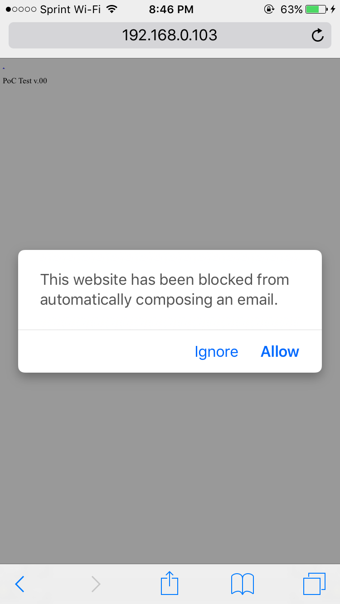

After finishing my last blog post, I got to thinking about the original goal of this series, which was to find the script that spawned the iOS Mail app from Brave as a popup mechanism.

Then it dawned on me, instead of spam clicking an itunes: link, spam click a mailto: link! I quickly edited my Invalid Address PoC to open a mailto: link instead. To test this proof of concept on Brave version 1.3.3 (17.05.10.13), visit this link in Brave.
This issue was fixed in iOS 10.2, by spawning this dialog in Safari:
Brave up until at least iOS version 1.3.3 still does not spawn a dialog for the user to choose whether to open the native iOS Mail app.
You can follow this issue on GitHub.